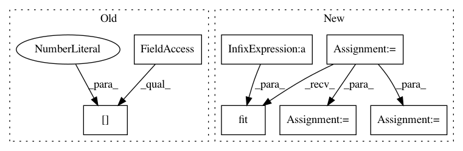

37a57f5ad43f86dd13e1d4f35e8e1b6421e73657,examples/fcma/classification.py,,,#,24
Before Change
mask_file = sys.argv[3]
epoch_file = sys.argv[4]
raw_data, labels = prepare_fcma_data(data_dir, extension, mask_file, epoch_file)
epochs_per_subj = int(sys.argv[5])
// no shrinking, set C=1
use_clf = svm.SVC(kernel="precomputed", shrinking=False, C=1)
//use_clf = LogisticRegression()
After Change
epoch_list = np.load(epoch_file)
num_subjects = len(epoch_list)
num_epochs_per_subj = epoch_list[0].shape[1]
raw_data, labels = prepare_fcma_data(data_dir, extension, mask_file, epoch_file)
// no shrinking, set C=1
use_clf = svm.SVC(kernel="precomputed", shrinking=False, C=1)
//use_clf = LogisticRegression()
clf = Classifier(use_clf, epochs_per_subj=num_epochs_per_subj)
// doing leave-one-subject-out cross validation
for i in range(num_subjects):
leave_start = i * num_epochs_per_subj
leave_end = (i+1) * num_epochs_per_subj
training_data = raw_data[0:leave_start] + raw_data[leave_end:]
test_data = raw_data[leave_start:leave_end]
training_labels = labels[0:leave_start] + labels[leave_end:]
test_labels = labels[leave_start:leave_end]
clf.fit(training_data, training_labels)
// joblib can be used for saving and loading models
//joblib.dump(clf, "model/logistic.pkl")
//clf = joblib.load("model/svm.pkl")
print(clf.predict(test_data))
In pattern: SUPERPATTERN
Frequency: 3
Non-data size: 7
Instances
Project Name: brainiak/brainiak
Commit Name: 37a57f5ad43f86dd13e1d4f35e8e1b6421e73657
Time: 2017-01-20
Author: yidawa@gmail.com
File Name: examples/fcma/classification.py
Class Name:
Method Name:
Project Name: jhfjhfj1/autokeras
Commit Name: b115f1f721594772ca12e02dc388b1b210a2ee73
Time: 2018-05-02
Author: jin@tamu.edu
File Name: experiments/mnist.py
Class Name:
Method Name: